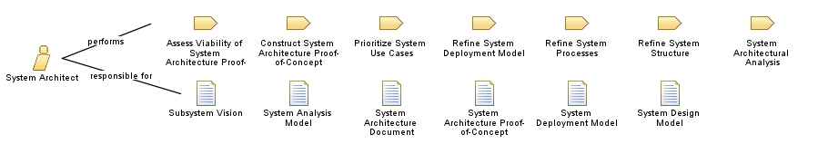

| Role: System Architect |
 |
|
 |
||
| Primary Performs | ||
|---|---|---|
| Additionally Performs | ||
| Modifies |
|
|
The System Architect establishes and refines the system's logical and physical structure and is concerned with the optimization of these structures in terms of major system elements and their interfaces, and making trade-offs in competing factors and constraints (for example, performance, cost, environmental impact), in evaluating potential solutions that produce the required behavior. The System Architects' view spans the entire system and all factors, external and internal, that might affect its development. Given the need to maintain this broad view, the System Architect rarely engages in depth in the detailed engineering of a system, preferring to leave that to other practitioners in the various engineering specialties. |
| Skills | "The ideal architect should be a person of letters, a mathematician, familiar with historical studies, a diligent student of philosophy, acquainted with music, not ignorant of medicine, learned in the responses of jurisconsults, familiar with astronomy and astronomical calculations."—Vitruvius, circa 25 BC Performance of the role of System Architect requires individuals who are well-versed in the several disciplines that contribute to systems engineering and who possess strong skills in analysis as well as solution synthesis. The System Architect must also be skilled at heuristic and inductive reasoning (on which so much of system architecting depends), as well as the deductive reasoning of other engineering disciplines. The system architect is concerned not simply with the technology of the solution but many other issues, such as system operation, performance, economic viability, manufacturability, and logistical support, and the political, technical, social, financial, and environmental factors (among others) that bear on these issues. The System Architect has to possess the experience and maturity that allows for objective analysis and trade studies to be done to select the best solution from many, with the ability to make good judgments when information is incomplete or ambiguous, and the ability to recognize that "best" is often dictated by political and economic as well as engineering considerations. In dealing with systems that are composites of people, hardware and software, the System Architect requires a strong sense of the physical limitations and constraints placed on any solution, by the human and hardware components. In addition to experience in systems engineering (and knowledge of allied disciplines such as operations research and engineering economics), the System Architect should have a strong grounding in software engineering (because of its ubiquity in modern systems), as well as:
The System Architect role encompasses the skills of the System Designer, albeit with a strategic, not a detailed focus. |
|---|---|
| Assignment Approaches | If the project is large enough to warrant a system architecture team, the goal is to have a good mix of talents, covering a wide spectrum of experience and sharing a common understanding of the systems engineering process. Ideally in such a team there is an individual, almost certainly the lead, who owns the overall vision for the project. The system architecture team should not be a committee of representatives from various teams, domains, or contractors. System architecture is a full-time function, with staff permanently dedicated to it. |
| Relationship of System Architect to Software Architect
There are many similarities in the roles; indeed for projects that are deemed "systems" developments because of their size or complexity, but which are, nevertheless largely or completely software, the two roles coalesce. However, in the general case, the constituency of the System Architect is larger than that of the Software Architect. The System Architect must contend with physically imposed constraints that do not exist in the much more malleable world of software. The very flexibility of software though makes possible paths of architectural evolution that previously could not be contemplated. Therefore, the relationship of Software Architect to System Architect is not a strictly subordinate one: feedback from software architectural considerations can profoundly affect the system architecture; to deny this is to run the risk of potentially sub-optimal system architectures based on the simplistic notion of software architecture as derivative from the allocation of requirements (by the System Architect) to computing platforms. It is true to say though that in a team of System Architect and Software Architect(s), the responsibilities of the System Architect role require that the System Architect be primus inter pares, because the system is the end-product. |